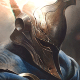

核心裝備
 巨蛇鋒牙
巨蛇鋒牙對護盾陣容效果極佳，固定穿甲也強化前中期爆發。
 殞落王者之劍
殞落王者之劍強化二技三連擊能快速觸發命中特效並處理高生命目標。
 席利妲咒怨
席利妲咒怨提供穿甲與技能命中緩速，讓長矛後更容易追擊。
 夜色緣界
夜色緣界法術盾提高跳入後排時的容錯。
 守護天使
守護天使後期強開失誤仍能復活再打一輪。

Pantheon · 點控爆發／強化技能切入型物理戰士
五層被動時不要固定只強化二技。需要秒脆皮可強化二技接連招，需要遠距收頭用強化一技，需要衝陣後脫身則強化三技拿移速；三技能正面擋掉關鍵爆發往往比多打一點傷害更重要。
本站評級理由：潘森在 ARAM 有穩定點控、強化長矛斬殺與三技正面免傷，前中期抓失位非常強；被動護甲穿透又讓他不容易完全掉出傷害。缺點是後期正面硬衝五人會變得很脆，大絕在單線也不像峽谷那麼容易創造繞後。
近期官方未列潘森標準 ARAM 專屬百分比修正，維持 100%／100%。6.1d 已提高彗星長矛基礎與斬殺傷害；現行 7.2 系列未再直接調整潘森。
對護盾陣容效果極佳，固定穿甲也強化前中期爆發。
強化二技三連擊能快速觸發命中特效並處理高生命目標。
提供穿甲與技能命中緩速，讓長矛後更容易追擊。
法術盾提高跳入後排時的容錯。
後期強開失誤仍能復活再打一輪。

前期攻擊與固定穿甲最符合潘森爆發。

三級鞋再補固定與百分比穿甲，提升中後期威脅。

三段強化二技很容易完成觸發並放大後續集火。

二技突進與大絕落地都能觸發額外傷害。

連續技能命中能放大一套爆發。

ARAM 擊殺助攻密集，快速堆疊適性能力。

提供額外短距離開戰角度，繞開前排點控後排。

閃現二技是最可靠的點控開戰。

補斬殺與重創，強化前中期抓人。
1 技 > 3 技 > 2 技
主 1 技提高消耗與斬殺，次 3 技降低格擋冷卻並提高輸出；大絕能點就點。
利用短按一技反覆消耗，保留五層被動威嚇。敵人靠前時強化二技點控，但跳之前先確認隊友能跟上。
巨蛇＋殞落後爆發很強。優先抓沒有位移或護盾保命的核心，三技朝向敵方主要火力格擋，結束時再用移速撤出。
傷害相對前中期下降，角色價值轉向點控與吸收關鍵技能。不要單獨大絕落在五人中央；大絕更適合封退路或逼後排改站位。
 致死宣告
致死宣告替換席利妲，改用致死宣告提供重創。
 黑色切割者
黑色切割者替換夜色緣界，為整隊提供疊層減甲。
 死亡之舞
死亡之舞替換一件穿甲裝，延後傷害並靠擊殺回血。
看遊戲卡片下方分類 → 點相同分類 → 看左側 S+／S／A。
一、二、三技能構成完整爆發與防守循環，技能增幅最穩定。
二技能點控是最可靠的開戰手段，控制增幅能直接提高抓人價值。
二技能跳躍提供穩定突進，可利用位移型增幅提高切入後收益。
強化二技能與被動連段會穿插多次普攻，命中特效卡有實際價值。
普攻縮技能、處刑與保命類單卡都能提高一套爆發後的收尾。
突進後的穿透、防禦與追加傷害可強化二技能進場。
v80.14.0 ARAM A 第五批：潘森同步現行 6.1d 後長矛數值與 7.2a 主流穿甲／殞落方向；標準 ARAM 維持 100%／100%。
ARAM 使用獨立於召喚峽谷的資料集；本站會把官方模式平衡、單線 5v5 特性與出裝／符文適配分開判斷，而不是直接複製峽谷配置。